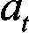
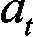

女士们先生们，事情会变得比以前更有趣。我们要解决的下一个模型是当今许多人工智能的核心；机器人，自动驾驶汽车，甚至电子游戏的 AI 玩家。他们都在模型的核心使用 Q-learning。他们中的一些人甚至将 Q-learning 与深度学习结合起来，制作了一个高度先进的 Q-learning 版本，称为深度 Q-learning，我们将在第九章的中介绍，以及用人工大脑进行 Pro-Deep Q-Learning。
所有的人工智能基础仍然适用于 Q 学习，如下所示:
现在我们可以添加另外两个基础知识，这次是专门针对 Q-learning 的:
仅此而已！没有更多的基本面需要牢记；现在我们可以真正深入 Q-learning 了，你会发现这并不难，而且非常直观。
为了解释 Q-learning，我们将使用一个例子，这样你就不会迷失在纯理论中，并且你可以想象正在发生的事情。上面写着:欢迎来到迷宫。
你将学习 Q-learning 如何在迷宫中工作。让我们马上画出我们的迷宫；这是:
图 1:迷宫
我知道，这是你见过的最简单的迷宫。为了简单起见，这很重要，这样你就可以主要关注人工智能是如何发挥其魔力的。想象一下，如果你在这一章迷路了，是因为迷宫而不是因为人工智能公式！重要的是你有一个清晰的迷宫，你可以想象人工智能如何从头到尾找到它的路。
说到开始和结束，想象一个小机器人在这个迷宫里，从点 E (入口)开始。它的目标是找到最快的方法指向 G (目标)。我们人类很快就能明白，但那只是因为我们的迷宫太简单了。你要构建的是一个可以从起点走到终点的 AI，不管迷宫有多复杂。让我们开始吧！
我给你三个可能的答案:
正确答案是…
2.我们创造环境。
这很容易，但我想在一个问题中强调这一点，以确保你记住，这必须始终是构建人工智能的第一步。在清楚地理解问题之后，构建你的 AI 解决方案的第一步总是设置环境。
这引出了另一个问题:
在构建这种环境时，您具体会采取什么步骤？
试着记住答案——你已经学过了——然后继续读下去。
现在我们已经获得了基础知识，所以您可以着手定义环境的第一步。
让我们从美国开始。你认为这个问题会变成什么样？记住，状态是你的人工智能的输入。它们应该包含足够的信息，让人工智能能够采取行动，引导它达到最终目标(到达 E 点)。
在这种模式下，我们没有太多的选择。在特定的时间或特定的迭代中，状态仅仅是 AI 当时的位置。换句话说，它将是位置的字母，从 A 到 L ，AI 在特定时间所在的位置。
正如你可能猜到的，构建环境后的下一步将是编写人工智能核心的数学方程，为了帮助你，将状态编码成唯一的整数比将它们保存为字母要容易得多。这正是我们要做的，使用下面的映射:
图 2:位置到州的映射
请注意，我们遵守 Q-learning 的第一个具体原则，即:有有限数量的状态。
让我们继续讨论行动。
这些动作仅仅是人工智能从一个地方到下一个地方的下一步动作。例如，假设 AI 在位置J；AI 可以执行的可能动作是转到 I ，转到 F ，或者转到 K 。同样，由于您将使用数学方程，您可以使用与状态相同的索引对这些动作进行编码。
以 AI 在特定时间位于位置 J 为例，AI 可以执行的可能动作是 5 、 8 和 10 ，根据我们之前的映射:索引 5 对应于 F ，索引 8 对应于 I ，索引10
因此，可能的动作仅仅是可以到达的不同位置的索引:
可能的操作= {0，1，2，3，4，5，6，7，8，9，10，11}
再次注意，我们遵守 Q-learning 的第二个特定的基本原则，即:有有限数量的动作。
现在很明显，当在一个特定的位置时，有一些人工智能不能执行的动作。还是前面那个例子，如果 AI 在 J 位置，它可以执行 5 、 8 和 10 动作，但不能执行其他动作。您可以通过将 0 奖励分配给它不能执行的动作，将 1 奖励分配给它可以执行的动作，来确保指定这一点。这让我们想到了奖励。
你几乎已经完成了你的环境——最后，但同样重要的是，你必须定义一个奖励系统。更具体地说，您必须定义一个奖励函数 R ，它将状态 s 和动作 a 作为输入，并返回一个数值奖励 r ，AI 将通过在状态 s 中执行动作 a 来获得该奖励:
R: (s，a)
那么，如何为我们的案例研究构建这样一个函数呢？在这里，很简单。由于有离散的有限数量的状态(从 0 到 11 的索引)，以及离散的有限数量的动作(从 0 到 11 的相同索引)，建立你的奖励函数的最好方法是简单地制作一个矩阵。
您的奖励函数将是一个正好 12 行 12 列的矩阵，其中行对应于状态，列对应于动作。这样，在你的函数 R: (s，a) ， s 将是矩阵的行索引， a 将是矩阵的列索引， r 将是矩阵中索引( s ， a )的单元格。
为了建立这个奖励矩阵，你首先要做的是，对于 12 个位置中的每一个，给机器人不能执行的动作一个 0 奖励，给机器人能执行的动作一个 1 奖励。通过对 12 个地点中的每一个都这样做，你将得到一个奖励矩阵。让我们一步一步来建造它，从第一个位置开始:位置 A 。
当在位置 A 时，机器人只能去位置 B 。因此，由于位置 A 的索引为 0(矩阵的第一行),位置 B 的索引为 1(矩阵的第二列),奖励矩阵的第一行将在第二列得到 1，在所有其他列得到 0，如下所示:
图 3:奖励矩阵-步骤 1
让我们继续到位置 B 。当处于位置 B 时，机器人只能去三个不同的位置: A 、 C 和 F 。由于 B 的索引为 1(第二行)，而 A 、 C 和 F 的索引分别为 0、2 和 5(第 1、3 和 6 列)，因此奖励矩阵的第二行将在第 1、3 和 6 列得到 1，在所有其他列得到 0:

图 4:奖励矩阵-步骤 2
C (索引 2 的)仅连接到 B 和 G (索引 1 和 6 的)，因此奖励矩阵的第三行为:
图 5:奖励矩阵-步骤 3
图 6:奖励矩阵-步骤 4
这就是你如何初始化奖励矩阵。
但是等等——你实际上还没有完成。你还需要做最后一件事。理解这一步至关重要。事实上，让我问你另一个问题，也是最后一个问题，它将检验你的直觉是否已经成型:
你如何让人工智能知道它必须去那个最高优先级的位置 G？
这很简单——你只要玩弄奖励就行了。你必须记住，有了强化学习，一切都从回报开始。如果你给位置 G 一个高奖励，例如 1000，那么 AI 将自动尝试去抓住那个高奖励，仅仅因为它比其他位置的奖励大。
简而言之，这是一般强化学习中需要理解和记住的一个基本点，人工智能总是在寻找最高的回报。这就是为什么到达地点 G 的诀窍是简单地给它比其他地点更高的奖励。
目前，手动将 a 高奖励(1000)放入位置 G 对应的单元格内，因为这是我们希望我们的 AI 去的目标位置。由于位置 G 的索引为 6，我们将 1000 奖励放在第 6 行第 6 列的单元格上。因此，我们的奖励矩阵变成了:

图 7:奖励矩阵-步骤 5
您已经定义了奖励！你只是通过建立这个奖励矩阵就做到了。重要的是要明白，这通常是我们在进行 Q-learning 时定义奖励系统的方式。
在第 9 章、用人工大脑走向专业——深度 Q 学习、关于深度 Q 学习，你会看到我们将以非常不同的方式进行，并且更容易地构建环境。事实上，深度 Q-learning 是今天在 AI 中广泛使用的 Q-learning 的高级版本，远远超过简单的 Q-learning 模型本身。但是你必须首先深入地解决 Q-学习，以便为深入的 Q-学习做好准备。
既然您已经定义了状态、动作和奖励，那么您就已经完成了环境的构建。这意味着你已经准备好处理下一步，你将构建人工智能本身，它将在你刚刚定义的环境中发挥它的魔力。
现在你已经建立了一个环境，在其中你清楚地定义了目标和相关的奖励系统，是时候构建 AI 了。我希望你已经准备好做一点数学了。
我将把这第二步分解成几个子步骤，引导你进入最后的 Q 学习模型。为此，我们将按照以下顺序介绍 Q-learning 核心的三个重要概念:
在你开始进入 Q 学习的细节之前，我需要解释一下 Q 值的概念。它是这样工作的:
对于每一对状态和动作( s ， a ，我们将关联一个数值 Q ( s ， a ):
我们会说 Q ( s ， a )是“在状态 s 下执行的动作 a 的 Q 值。”
现在我知道你可能会问这样的问题:这个 Q 值是什么意思？它代表了什么？我该怎么计算呢？这是我第一次学习 Q-learning 时，脑海中的一些问题。
为了回答这些问题，我需要介绍一下时差。
这就是数学真正发挥作用的地方。比方说我们处于特定的状态，在特定的时间 t 。让我们随机执行一个动作，任何一个都可以。这将我们带到下一个状态，我们得到奖励。
在时间 t 的时间差，由表示，是以下之间的差:
这导致:

你可能认为这很好，你理解了所有的术语，但是你可能也在想“但是这是什么意思呢？”别担心——我学这个的时候就是这么想的。
我将一边解释一边提高你的人工智能直觉。首先要理解的是，时间差代表了人工智能学习的好坏。关于训练过程(在此过程中学习 Q 值)，它的工作原理如下:
 中执行的动作导致了高奖励。这意味着 Q 值会自动增加(记住，您将在下一节看到如何增加)。这些增加的 Q 值是重要的信息，因为它们向人工智能表明了哪些转变会带来好的回报。
中执行的动作导致了高奖励。这意味着 Q 值会自动增加(记住，您将在下一节看到如何增加)。这些增加的 Q 值是重要的信息，因为它们向人工智能表明了哪些转变会带来好的回报。总之，时间差异就像一个临时的内在奖励，人工智能将在训练开始时试图找到大值。最终，人工智能会在训练结束时最小化这种奖励——也就是说，当它接近最终目标时。
这正是你必须记住的时间差异的直觉，因为它将真正帮助你理解 Q 学习的魔力。说到魔法，我们即将揭开谜题的最后一部分。
现在你明白了，人工智能将迭代一些 Q 值的更新，以达到高的时间差异，这最终会减少。但是它是怎么做到的呢？这个问题有一个特定的答案——贝尔曼方程，强化学习中最著名的方程。
为了执行越来越好的动作，引导人工智能达到它的目标，当你发现高度的时间差异时，你必须增加动作的 Q 值。只剩下一个问题:人工智能将如何更新这些 Q 值？强化学习的先驱理查德·贝尔曼找到了答案。在每次迭代中，通过以下称为贝尔曼方程的方程更新从时间 t-1(前一次迭代)到 t(当前迭代)的 Q 值:

其中是学习速率，它指示 Q 值的学习进行得有多快。其值通常介于 0 和 1 之间，例如 0.75。的值越低，Q 值的更新越小，Q 学习将花费越长的时间。它的值越高，Q 值的更新就越大，Q 学习就越快。从这个等式中可以清楚地看到，当时间差为高时，Q 值增加。
现在你已经拥有了 Q-learning 的所有元素——顺便祝贺你——让我们将所有这些元素之间的点连接起来，以加强你的 AI 直觉。
Q 值测量与动作和状态对相关的“惊喜”或“挫折”的累积。
在高时差的“惊喜”情况下，人工智能得到加强，而在低时差的“挫折”情况下，人工智能被削弱。
我们想知道会给 AI 最大“惊喜”的 Q 值，这正是贝尔曼方程在每次迭代中更新 Q 值所做的。
你已经学到了相当多的新信息，即使你已经完成了一个连接这些点的直觉部分，但这还不足以真正牢固地掌握 Q-learning。下一步是后退一步，最好的方法是从头到尾经历整个 Q-learning 过程，让它在你的头脑中变得清晰。
让我们总结一下整个 Q 学习过程的不同步骤。为了清楚起见，这个过程的唯一目的是在一定数量的迭代上更新 Q 值，直到它们不再被更新(我们将该点称为收敛)。
迭代的次数取决于问题的复杂程度。对于我们的问题，1，000 就足够了，但是对于更复杂的问题，您可能需要考虑更大的数字，比如 10，000。简而言之，Q 学习过程是我们训练 AI 的部分，它被称为 Q 学习，因为它是学习 Q 值的过程。然后，我将解释推理部分(纯预测)的发生了什么，一如既往，它发生在训练之后。完整的 Q 学习过程从训练模式开始。
初始化(第一次迭代):
下一次迭代:
在每次迭代 t ≥ 1 时，您重复以下步骤一定次数(由您开发人员选择):
 ，它可以导致下一个可能的状态，也就是说，这样。
，它可以导致下一个可能的状态，也就是说，这样。 并获得奖励。
并获得奖励。 在这个过程的最后，你已经获得了不再更新的 Q 值。那只意味着一件事；你已经准备好进入推理模式来破解迷宫了。
训练完成，现在开始推理。提醒你一下，推理部分是当你有一个完全训练好的模型，你可以用它来做预测。在我们的迷宫中，你要做的预测是从起点(位置 E )到终点(位置 G )要执行的动作。所以，问题是:
你将如何使用学习到的 Q 值来执行动作？
好消息；对于 Q-learning 来说，这非常简单。当处于某个状态时，您只需执行对于该状态具有最高 Q 值的动作:
仅此而已-通过在每个位置(每个州)这样做，您可以通过最短的路线到达您的最终目的地。我们将实现它，并在下一章的实践活动中看到结果。
在这一章中，我们学习了 Q-learning 模型，它只适用于具有有限数量的输入状态和有限数量的可能执行动作的环境。
当执行 Q 学习时，AI 通过迭代过程学习 Q 值，因此(状态，动作)对的 Q 值越高，AI 就越接近最高奖励。
在每一次迭代中，Q 值通过贝尔曼方程更新，该方程简单地包括添加时间差异，用学习速率因子贴现。我们将在下一章开始一个完整的实践 Q-learning 活动，应用于现实世界的商业问题。
 下执行动作获得的报酬
下执行动作获得的报酬 ，加上在未来状态下执行的最佳动作的 Q 值，再乘以一个因子，称为折扣因子
，加上在未来状态下执行的最佳动作的 Q 值，再乘以一个因子，称为折扣因子